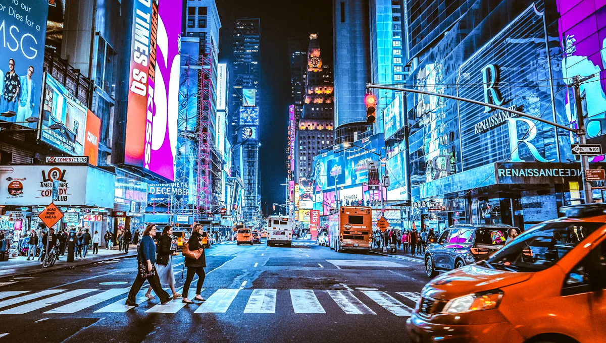
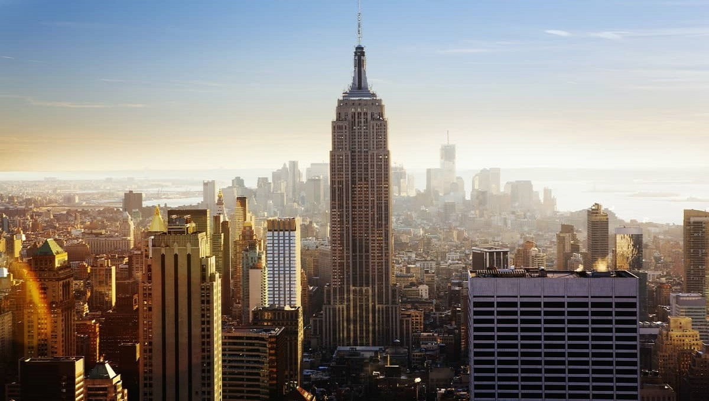
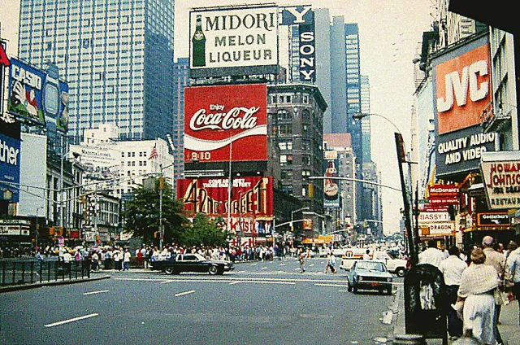

Nevezetességek
New York híres látnivalói közé tartozik az Empire State Building, a város ikonikus felhőkarcolója, és a Szabadság-szobor, a szabadság szimbóluma. A Central Park zöld oázis a város közepén, míg a Times Square a fények és reklámok forgatagáról ismert.
Részletek
Közlekedés és városi élet
New Yorkban a metró a leggyorsabb módja a városon belüli közlekedésnek, de a buszok és a taxik is széles körben elérhetők. A város sosem alszik: a Times Square éjjel is pezseg, a kávézók, éttermek és boltok egész nap nyitva tartanak.
Részletek
Kultúra és életstílus
New York a művészetek és kultúra központja: világhírű színházak, mint a Broadway, és számos múzeum, például a Metropolitan Museum of Art várja a látogatókat. A város lakói sokszínűek, és a gyors, pörgős életstílus jellemzi őket.
Részletek
A város történelme
New York története röviden: A mai New York területét eredetileg algonkin és irokéz indián népek lakták. A 17. században holland telepesek alapították meg **New Amsterdam** néven, majd 1664-ben az angolok elfoglalták és **New York** lett belőle. A 19–20. században a város hatalmasra nőtt, mivel milliók érkeztek ide bevándorlóként az Ellis Islanden keresztül.
Több ide kattintva: